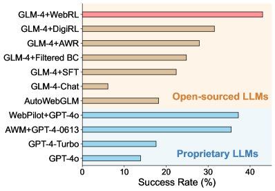
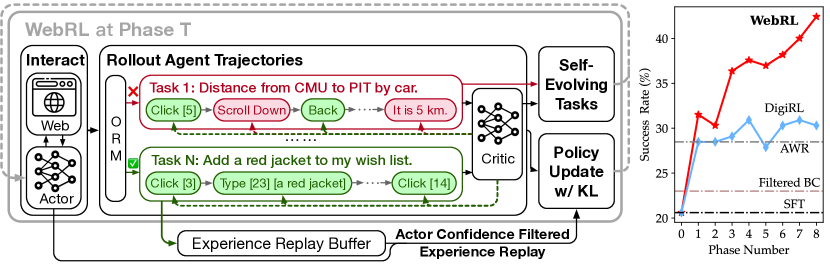
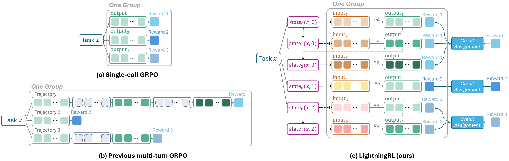
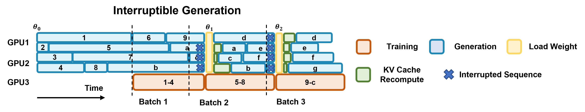

Agent 强化学习已经从“给答案打分”进入“训练交互轨迹”
近两年主流方法的共同方向不是再造一个 PPO，而是把奖励、工具调用、长程信用分配和训练系统重新接到同一个闭环里。
如果把 Agent 看成一个持续读状态、做动作、接收环境反馈的策略，那么近两年真正的变化不是“强化学习终于替代了监督微调”，而是训练对象从一条完整回答变成了可拆分、可回放、可验证的交互轨迹。
这组论文共同回答四个工程问题：奖励从哪里来（规则、偏好、工具或环境）；奖励落在哪个粒度（token、步骤、turn 还是整条轨迹）；长程信用如何分配；以及 rollout 与训练怎样在昂贵的多轮环境中保持稳定。主张：Agent RL 的主流路线已经形成“RLVR 负责可验证能力、环境/工具 RL 负责行动闭环、轨迹级方法负责信用分配、异步系统负责吞吐”的分工。
最值得记住的判断：优化器的名字会变，但决定上限的是反馈信号是否真的测到了目标行为。综合判断；由 DeepSeek-R1、RAGEN 与 RLVR 批判性研究共同支持
先把“Agent RL”拆成四个正交问题
从零开始：Agent 为什么适合用强化学习训练
如果你只把语言模型理解成“输入一段文字、预测下一个 token 的机器”，监督微调很好理解：给它正确答案，最大化正确答案的概率。Agent 的难点在于，正确答案往往不是一句话，而是一串动作：先搜索、再打开页面、再调用数据库、再检查结果，最后才知道任务是否完成。中间每一步都可能合理，却也可能把后续带入死路。
三个最容易混淆的概念
第一，on-policy 与 off-policy。PPO/GRPO 通常用当前策略刚刚采样的数据更新自己，数据新鲜但昂贵；经验回放、AWR 等会重复使用旧策略数据，样本更省却要处理分布偏移。第二，value function 与 reward model。value function 预测“从这个状态继续走，未来能拿多少回报”；reward model 评估“这条回答或轨迹有多好”，二者都输出分数，却服务于不同环节。第三，RL 与 DPO。DPO 直接在偏好对上做离线概率比优化，不需要在线与环境交互；它很有用，但严格说不等价于 Agent 的在线 RL。
PPO 之后：更轻的优势估计与更稳的序列更新
PPO 仍是共同语法：限制新旧策略偏离，用优势函数把高回报动作的概率推高。但在 LLM 中，value model、长序列和 token 级 ratio 会把显存、方差与工程复杂度放大。2024—2025 的主流改法有三条：用 REINFORCE 风格目标削掉不必要组件；用 GRPO 的组内统计替代 critic；用 DAPO/GSPO 调整 clipping、采样和 ratio 的粒度。
1. REINFORCE：最朴素，也最容易被低估的基线
REINFORCE 的直觉很简单：采样一条轨迹，拿到回报后，把这条轨迹中出现过的动作概率整体往上推；回报差的轨迹则往下推。它不需要 PPO 那样的 clipped surrogate，也不必训练一个庞大的 value model。缺点同样直接：如果每条轨迹的回报差异很大，梯度方差会很高。实践中常用 baseline、leave-one-out average（RLOO）或同 prompt 的多次采样来降低方差。Back to Basics 的贡献不是发明新公式，而是指出在 RLHF 的短序列、奖励昂贵、数据接近 on-policy 的设置里，PPO 的许多保护机制未必值得付出额外成本。
2. PPO：为什么仍然是 Agent RL 的默认语言
PPO 的“clip”可以理解为限速器：即便某条轨迹奖励很高，也不允许一次更新把对应 token 的概率扩大几十倍。它通常配合 actor-critic：actor 负责决定动作，critic 估计每个状态的未来价值，再用 GAE 把最终回报传播到中间步骤。对多轮 Agent 来说，这个 critic 很有吸引力，因为网页点击、工具调用等动作不一定能被同一个最终答案解释；但 critic 也可能学偏，尤其是在状态很长、环境非平稳或成功样本很少时。
3. GRPO：用“同题对比”替代 value model
GRPO 的关键工程观察是：同一个问题可以一次采样多个答案，这些答案共享相同的初始状态，因此组内奖励的均值和方差天然提供了一个 baseline。这样就不必再维护一套与语言模型同样昂贵的 value head。它特别适合数学、代码等“同题可多采样、结果可验证”的任务；但如果一个组里的答案全部正确或全部错误，标准化优势会接近零，训练批次就没有有效方向。DAPO 的 Dynamic Sampling 正是在处理这种无梯度 prompt group。
4. DAPO：把训练稳定性拆成四个可观测故障
DAPO 不是简单把 GRPO 换个名字，而是把大规模 RL 中常见的失败模式逐一对应到机制：Clip-Higher 放宽重要性比率的上界，避免熵过快塌缩；Dynamic Sampling 丢弃组内准确率为 0 或 1 的 prompt，保证 batch 中有有效梯度；Token-level policy gradient 适应长 CoT 的不同 token 贡献；Overlong Reward Shaping 给超长/截断输出更平滑的惩罚，减少奖励噪声。它的价值在于把“训练能否跑起来”变成可复现的配方，而不是只报告最终分数。
5. GSPO：为什么要从 token ratio 走向 sequence ratio
在长序列中，单个 token 的重要性比率可能因为局部概率变化而剧烈波动，但最终奖励通常是整条序列的。GSPO 因此先把整条输出的 log-likelihood ratio 聚合为 sequence-level ratio，再做 clipping、reward 和优化。直觉上，这是让“奖励作用的对象”和“裁剪保护的对象”保持一致，尤其适合 MoE 与长 CoT。代价是更粗的更新粒度可能掩盖序列内部的错误 token，Qwen 团队报告的稳定性优势需要结合其具体模型和基础设施解读。
6. RLHF、RLAIF 与 DPO：Agent RL 之前的对齐谱系
RLHF 先收集人类对回答的偏好，训练 reward model，再用 PPO 等在线 RL 最大化偏好分；RLAIF 把人类标签换成 AI 评审，规模更大但更依赖评审模型的偏差。DPO 则直接在 chosen/rejected 对上优化相对 log-probability，不需要 rollout 环境和在线 reward。它们适合“回答质量/安全/风格”这种偏好任务，而 Agent RL 更关注动作造成的真实后果。实际系统常把两者串联：SFT/RLHF 让模型遵守工具协议，RLVR 或环境 RL 再让它学会完成任务。Back to Basics 的提醒是，在线 RL 的收益不能被 PPO 的实现复杂度遮蔽；但在真正长程环境里，DPO 也无法替代对状态转移和延迟奖励的建模。
| 路线 | 它改了什么 | 适合的信号 | 代价/边界 |
|---|---|---|---|
| REINFORCE / RLOO | 保留在线策略梯度，减少 PPO 组件 | 偏好或结果奖励 | 方差控制依赖 baseline/采样；Back to Basics 的结论主要在 RLHF 设定成立 |
| GRPO | 组内相对优势，省 value model | 数学、代码、可验证答案 | 组内全 0/全 1 时没有有效梯度；依赖 verifier 质量 |
| DAPO | Clip-Higher、Dynamic Sampling、token-level loss、Overlong shaping | 长 CoT + rule verifier | 更像一套可复现 recipe；超出可验证任务后的收益尚未证明 |
| GSPO | sequence likelihood ratio 与 sequence-level clipping | 长序列、MoE RL | 相比 GRPO 更稳定的主张仍主要来自 Qwen 系统实验 |
| PPO + critic | GAE/价值函数做 step-level credit | 多轮环境、稀疏回报 | 训练和显存开销高，critic 误差会传导到策略 |
横向看，优化器创新解决的是“怎样更新得稳”；它们本身并不解决“奖励是否代表目标”。这也是为什么 DeepSeek-R1 的 rule reward、WebRL 的 ORM、SWE-RL 的 patch similarity 必须和算法分开审读。
RLVR 为什么先在数学、代码和科学任务上爆发
RLVR（Reinforcement Learning with Verifiable Rewards）的关键不是“奖励更智能”，而是奖励更容易核验：最终答案、编译器/单元测试、格式约束都能把成功压缩成低噪声信号。DeepSeek-R1 在 Nature 版本中明确区分 reasoning data 的 rule-based reward 与 general data 的 model-based reward，并承认后者更容易被 reward hacking。
为什么 verifier 比“更聪明的评审模型”更重要
一个 verifier 不需要解释答案为什么好，只需要在训练规模上稳定地判断对错。数学题可以比较最终数字，代码可以运行测试，网页任务可以读取环境状态。这种二值信号看起来粗糙，却有三个优势：标注成本低、跨 batch 一致、不会因为语言风格改变而漂移。相反，开放式回答依赖 reward model 或 LLM-as-a-judge，模型可能学会迎合评分器的表面偏好，而不是完成任务。RLVR 的“可验证”不是哲学上的真理，而是工程上足够可靠的代理目标。
DeepSeek-R1：纯 RL、冷启动与第二阶段对齐的组合
R1-Zero 直接在 base model 上用规则奖励训练，展示了答案级 RL 可以让模型逐渐生成更长的思考、检查和反思。它也暴露出语言混用、可读性差和不会调用工具的问题。因此最终的 DeepSeek-R1 不是“纯 RL 一步到位”：先用少量 cold-start reasoning data 改善格式，再做 reasoning RL，然后 rejection sampling + SFT，最后用 helpfulness/harmlessness 的 model-based reward 做第二阶段 RL。这个流程说明 RL 更像能力放大器，冷启动和 SFT 负责把能力装进可用的交互外壳。
DAPO 与 Kimi：从能力演示走向规模化 recipe
DAPO 的贡献是开放训练配方：数据、verifier、脚本、模型和基础设施都公开，Qwen2.5-32B 在 AIME 2024 达到 50%，并报告比 DeepSeek-R1-Zero-Qwen-32B 少一半训练步数。Kimi k1.5 则把重点放在长上下文、长短 CoT 转换和简化的 RL 框架，报告 AIME、MATH500、Codeforces、MathVista 等多模态结果。两者都支持“工程系统决定可复现性”的判断，但它们的 benchmark 仍主要集中在可验证推理，不能直接推出通用 Agent 能力。
RLVR 的反例：pass@1 提高，能力边界未必扩大
训练后模型往往更擅长在第一次尝试就找到正确答案，因此 pass@1 上升。但如果给 base model 很大的采样预算，原本藏在其分布中的正确路径可能也会被找到。Yue 等人的批判性研究据此认为，RLVR 可能主要是在重新加权已有路径，而不是创造全新的推理程序；另一类工作则指出，单看最终答案的 pass@k 可能把错误但碰巧答对的思路算作成功。对初学者而言，最重要的不是在两种叙事中选边，而是区分“采样效率提高”“推理多样性变化”和“真正学到新算法”这三个命题。

把搜索、代码执行和软件仓库变成可学习的环境
DeepSeek-R1 自己把“不会用搜索与计算器”列为限制。Search-R1、ReTool 和 SWE-RL 的共同动作，是把工具/软件环境从推理外部的外挂，改成 rollout 内部的状态转移：模型必须学会何时调用、传什么参数、如何读取结果、何时停止。
WebRL：先解决“没有足够训练题”再谈优化器
WebArena 的难点不是动作空间有多复杂，而是任务长、成功信号稀疏、可用训练指令少。WebRL 从失败轨迹里自动改写出新任务，用 critic 过滤太简单或不可完成的指令，再用 ORM 判断最终状态是否完成。每一轮课程都在当前能力附近生成样本，因此模型更容易遇到“刚好能学会”的挑战。KL 约束限制策略漂移，experience replay 保留旧知识，actor-confidence filtering 则避免回放太熟或太难的轨迹。这个框架本质上把 curriculum、reward model 和 off-policy replay 绑在了一起。
Search-R1：检索结果既是观察，也是训练噪声
传统 RAG 把搜索当成固定预处理：先检索，再让模型回答。Search-R1 让模型在推理中自己决定何时搜索、搜索几次、每次问什么。难点是检索文本不是策略生成的 token，直接把它和模型输出拼接会污染 log-probability 和梯度。retrieved-token masking 只更新模型真正生成的查询与回答 token；最终结果奖励则鼓励模型学会“需要时搜索、足够时停止”。这比提示词层面的 ReAct 更接近策略学习，但它仍依赖固定搜索 API 和 QA benchmark。
ReTool：工具使用是一个决策问题，不只是能力外挂
ReTool 先用 cold-start 数据教模型读懂代码解释器的输入/输出格式，再在 rollout 中允许自然语言思考与代码执行交错。模型必须同时学三件事：是否值得调用工具、调用时写出什么代码、工具返回后如何修正前一步。论文报告在 AIME 2024 上 400 步达到 67%，而无 CI 的文本 RL 基线在 1080 步只有 40%，并观察到自纠错和更早调用代码的行为。需要谨慎的是，冷启动和任务都围绕数学计算，工具策略是否能迁移到浏览器、数据库或真实软件尚未由该论文证明。
SWE-RL：把软件演化记录视作天然的行为数据
软件仓库记录了 issue、提交、pull request、代码快照和测试结果，这些记录比人工合成的 CoT 更接近真实工程工作流。SWE-RL 从历史 PR 构造 issue-to-patch 任务，用规则奖励衡量生成 patch 与 oracle patch 的相似度，并用 reproduction tests 做候选重排。Llama3-SWE-RL-70B 在 SWE-bench Verified 达 41.0%，且数学、代码推理和 MMLU 等 OOD 任务也有提升。它最值得学习的地方是数据来源设计；最大风险则是 patch similarity 会惩罚功能等价但写法不同的解。

| 论文 | Agent 动作 | 信号设计 | 主要证据 | 最重要的限制 |
|---|---|---|---|---|
| WebRL (ICLR 2025) | 网页点击、滚动、输入 | ORM 二值成功 + KL + replay | Llama3.1-8B 4.8% → 42.4%；70B 达 49.1% | 依赖 WebArena-Lite 与 ORM；任务可行性需过滤 |
| Search-R1 | 生成多次 search query 并读检索结果 | 结果奖励 + retrieved-token masking | 七个 QA 数据集；相对 RAG baseline 有 20—41% 提升（v5 摘要） | 搜索引擎/检索分布与离线 benchmark 绑定 |
| ReTool | 自然语言与 code interpreter 交错 | AIME 最终正确性奖励 | AIME 2024 67%，400 steps；文本 RL 40%/1080 steps | 预印本；冷启动数据与数学任务占主导 |
| SWE-RL (NeurIPS 2025) | 定位文件、生成 patch、跑 reproduction tests | patch 相似度规则奖励 + 测试重排 | SWE-bench Verified 41.0%，并提升 OOD 数学/代码 | 相似度不是语义等价；Agentless Mini scaffold 简化了定位 |
这组结果支持一个更具体的判断：工具调用能力不是“多一个 API token”这么简单，它需要把工具输出重新编码为下一步可决策的状态，并为失败/回退提供可学习的反馈。SWE-RL 的成功尤其说明，真实软件演化记录可以充当 RL 数据源；但其 reward 仍偏向 oracle patch 的表面相似度。
多轮 Agent 的难点：不是更长的 CoT，而是信用分配
单轮数学题的轨迹大致是“prompt → 一段回答 → 最终答案”；多轮 Agent 的轨迹则可能是“计划 → 搜索 → 读取结果 → 修改计划 → 执行工具 → 回退 → 再尝试”。如果只在最后给一个 0/1，所有动作会收到同样的成功或失败标签，导致高方差和错误归因；如果把每一步都强行标注，又需要昂贵且可能主观的过程监督。轨迹 RL 的核心，就是在这两个极端之间找到可计算的信用分配。
三种信用分配粒度
Token-level 直接复用语言模型的 log-probability，计算高效，但它很难知道一段长文本里哪句话真正改变了环境。Turn/action-level 把一次 LLM 调用或工具调用视作一个动作，更贴近 Agent 设计，也更容易接入 critic。Trajectory-level 只对整条轨迹评分，最简单、最稳健，却把探索成功的原因隐藏起来。实际系统常采用层级做法：先把 episode return 分给 action，再在 action 内用 token-level loss 更新。
RAGEN：先把失败模式测出来
RAGEN 在四个风格化环境里观察到 Echo Trap：训练早期某些策略偶然获得高回报，随后奖励方差突然塌陷、梯度尖峰出现，模型重复同一种浅层动作。StarPO-S 用轨迹过滤、critic 和梯度稳定来缓和这一现象；论文还发现，若奖励只看最终成功而不包含 reasoning-aware 的中间信号，模型可能产生“看起来像思考”的幻觉式文本，却没有真正改善行动。RAGEN 的价值更接近诊断学：它告诉我们多轮 RL 不能只把单轮 GRPO 拉长。
Agent Lightning：先标准化数据接口，再替换算法
真实 Agent 的执行框架可能来自 LangChain、OpenAI Agents SDK、AutoGen 或自写代码；把所有 turn 拼成一条长序列再 masking，容易破坏位置编码连续性，也难调试。Agent Lightning 把每次 LLM call 抽象成 transition，并用 Training-Agent Disaggregation 把 rollout 与 trainer 解耦。它的关键设计是可插拔：今天可以接 GRPO，明天可以接 PPO、REINFORCE++ 或更复杂的层级 value。需要看到的限制是，当前实现把一个 episode 的回报平均分给每个 action，真正精细的 credit assignment仍是未来工作。
AReaL：吞吐与数据新鲜度的交换
同步 RL 的节奏是：所有 rollout 完成一个 batch，trainer 更新一次，再开始下一轮。长短回答混在一起时，短样本必须等待最长样本，GPU 大量空闲。AReaL 让 rollout worker 持续生成、training worker 收集到足够样本就更新，于是生成和训练完全异步。代价是样本可能由旧策略生成，policy 与 behavior policy 之间出现 staleness。AReaL 用 worker 负载平衡和 staleness-enhanced PPO 控制这一偏差；2.77× speedup 是系统吞吐指标，不应直接读成 2.77× 智能提升。
TSR：把 test-time search 前移到训练期
长程环境中的随机 rollout 经常一开始就走入死路，后续所有 token 都只能得到失败奖励。TSR 在训练生成阶段加入 best-of-N、beam 或 shallow lookahead，用状态反馈挑出更有希望的局部动作，再把高质量轨迹交给 PPO/GRPO。它不改变优化目标，而是改变训练数据的质量，因此与不同 optimizer 兼容。代价是一次性增加 rollout compute，并可能让策略过度依赖搜索器提供的偏好。


如果你真的要训练：一条可复现的最小路线
论文里的算法名容易让人误以为训练 Agent 只需要替换一个 loss。实际工程更像一条流水线：先定义任务和终止条件，再构造可判定的 verifier，准备初始策略，生成 rollout，记录每次动作与环境观察，计算奖励/优势，更新策略，最后用独立任务和独立环境评估。任何一环含糊，后面的分数都很难解释。
| 监控量 | 它在告诉你什么 | 异常时先查什么 |
|---|---|---|
| 平均奖励 / 成功率 | 任务完成结果是否提升 | verifier 是否误判、任务是否太难 |
| 组内全 0/全 1 比例 | GRPO 是否有有效相对优势 | 任务难度分布、dynamic sampling |
| 策略熵 | 探索是否过快塌缩 | clip 上界、温度、重复动作 |
| KL(π||πref) | 策略是否离参考模型过远 | 学习率、clip、reference 更新频率 |
| 输出长度 / 截断率 | 模型是在思考还是在拖长答案 | max tokens、overlong reward、长度偏置 |
| 工具调用成功率 | 动作格式与工具选择是否正确 | schema、解析器、环境异常 |
| 训练样本 staleness | 异步 rollout 是否过时 | worker 配比、更新频率、队列长度 |
评估也要分层：任务成功率回答“有没有完成”；pass@k 回答“多次尝试能否找到一个解”；轨迹一致性、工具正确率和成本回答“是否以可部署的方式完成”。Agent RL 最容易出现的假进步，是成功率上升但调用次数、token、重试和环境成本同时失控。
把主流方法放在同一张选择表里
| 方法簇 | 典型论文 | 主要信号 | 优化/信用粒度 | 它真正解决的事 | 不要外推的结论 |
|---|---|---|---|---|---|
| RLVR / outcome RL | DeepSeekMath、DeepSeek-R1、DAPO、Kimi | 规则 verifier、格式/答案/测试 | GRPO/DAPO/GSPO；多为序列/结果级 | 在可验证任务上以低噪声奖励放大正确轨迹 | 不能自动解决开放式写作、长期规划或安全 |
| 在线环境 RL | WebRL、Search-R1 | 网页成功、检索结果、ORM | PPO/GRPO + replay/KL；episode/step 混合 | 让任务生成、环境反馈与策略更新闭环 | benchmark 的环境/ORM 可能比算法贡献更关键 |
| 工具增强 RL | ReTool、Search-R1 | 代码执行/搜索后的最终正确性 | 多轮 rollout + outcome reward | 学习何时、如何、是否继续调用工具 | 工具分布固定时，策略可能只学会任务模板 |
| 真实软件 RL | SWE-RL | patch similarity、reproduction tests | 结果奖励 + scaffold reranking | 把公开软件演化变成可规模化 RL 数据 | 相似度 reward 不能覆盖功能等价解 |
| 轨迹/层级 RL | RAGEN、Agent Lightning | episode return、critic、heuristic | turn/action/transition credit | 把动态工作流拆成可训练 transition | 简单均分 credit 仍可能错归因 |
| 训练系统与探索 | AReaL、TSR | rollout 质量、环境回报 | 异步训练、训练时 search | 解决吞吐、staleness 与探索质量 | 系统 speedup 不是智能增益的充分证据 |
表格显示一个反直觉模式：方法越接近真实 Agent，论文越少把贡献写成“某个 loss 更好”，越多讨论任务生成、环境封装、缓存、重放、过时数据和 scaffold。Agent RL 的瓶颈正在从单一 optimizer 转向“反馈闭环的系统设计”。
哪些结论已经站稳，哪些仍然只是漂亮的曲线
更大的图景是：Agent RL 正在把“模型能力”拆成可观测的闭环组件。下一阶段真正有区分度的问题，不会只是哪个方法在 AIME 更高，而是：同一个 Agent 能否在不同环境、不同工具、不同任务生成分布下保持稳定；能否证明奖励没有被投机；以及能否把轨迹级 credit 变成可迁移的技能。